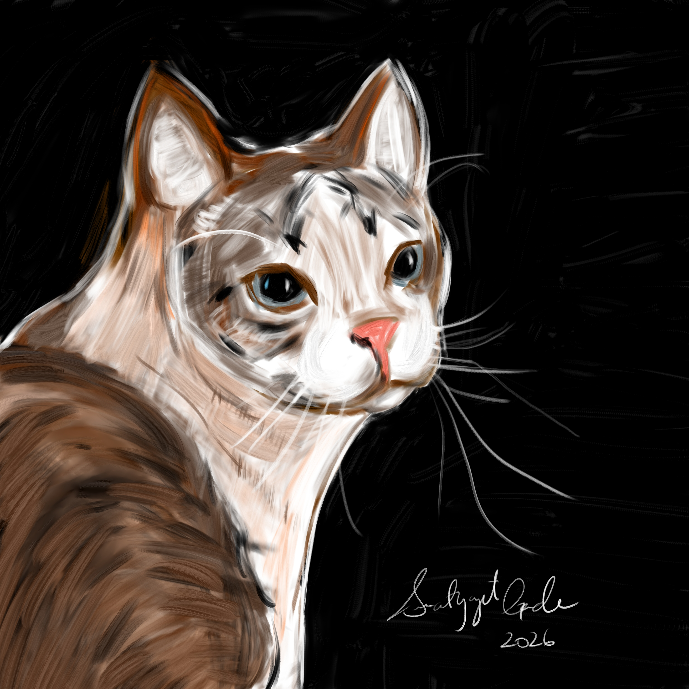
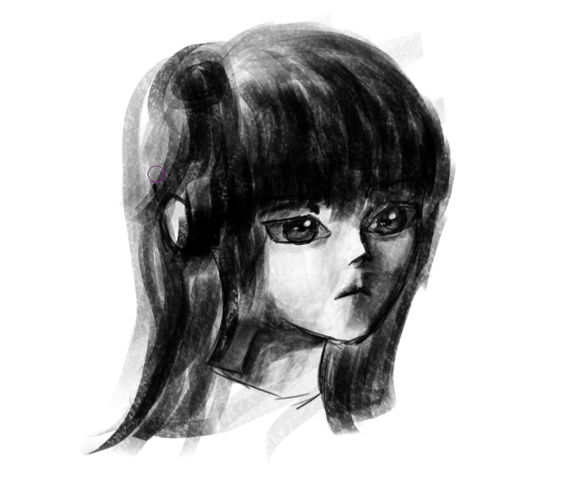

Astrophysics & Data Science
Satyajit “Chris” Gade
I am interested in Astrophysical Research and Computation.
I work on simulating lens systems and building ML models with the goal of constraining a value for the Hubble Constant using time-delay cosmography.
See my workContact Me
Brief summary of work I've done as a researcher...
- Gravitational lens modeling: SIS, SIE and external shear
- Shear and ellipticity drawn from Oguri & Marshall (2010)
- MCMC with emcee, Honors in Astronomy, Paul Robeson Scholar
- Contributed talk at Rutgers, March 2025
Brief summary of work I've done as a data nerd...
- Keras, TensorFlow, PyTorch and scikit-learn
- Datasets of 300,000 to 1,000,000 samples
- HPC with SLURM on Rutgers’ Amarel cluster
- Held-out tests, residual and Q-Q diagnostics
I work on both halves together, so every model is checked against the physics it is meant to capture.
Chapter 1 · Who I am
The person behind the models
My name is Satyajit, and most people call me Chris. I graduated from Rutgers–New Brunswick with Honors in Astrophysics, a minor in Mathematics, and a thesis on applying machine learning to gravitational lens modeling.
I'm now looking for research opportunities in astrophysics and entry-level roles in data science, where I can put data-driven methods to work on hard problems.
Outside of coding and research, I spend my time listening to music, drawing, and gaming. When working, I research alongside my panda plush, Dr. Bubbles, who keeps me focused even during times of stress. I also frequent MeeTu and Utepia for bubble tea where I get an iced shaken matcha or strawberry matcha.

Education
M.S. Data Science
Monroe University, New Rochelle, NY. Started September 2026.
B.S. Astrophysics, Honors
Rutgers University, 2021–2025. Thesis: Applying Machine Learning to Gravitational Lens Modeling. Honors in Astronomy, SAS Paul Robeson Scholar, Dean’s List (Fall 2021, 2023, 2024).
Chapter 2 · Experience
Teaching networks to learn physics.
Two years of gravitational lens modeling at Rutgers, from thesis to cluster-scale simulation.
Post-Baccalaureate Researcher
Rutgers Physics & Astronomy · Sep 2025 – Jun 2026
- Developed and scaled a gravitational lens simulation pipeline to generate 300,000 mock systems (SIS+shear, SIE and SIE+shear) using SLURM on Rutgers’ Amarel HPC cluster.
- Designed three neural networks, matched to single-, double- and quad-image lenses, that predict the lens potential and deflection from image positions, time delays and redshifts.
- Built a diagnostic suite (residual histograms, Q-Q plots and skewness tests) to evaluate the trained networks on held-out simulated systems.
Undergraduate Student Researcher
Rutgers Physics & Astronomy · Sep 2024 – May 2025
- Built a Python pipeline on the group’s gravlens library, drawing shear and ellipticity from Oguri & Marshall (2010) distributions for 9,000 simulated lenses across three isothermal models.
- Mapped correlations across five lens parameters in corner plots, showing the learnable structure that motivated the neural network approach.
Contributed talk
Rutgers Physics & Astronomy · March 2025
- Presented the full pipeline, from dataset generation to validation, to faculty, postdocs and students.
Chapter 3 · Selected Projects & Case Studies
Case studies
Each case study covers the problem, my role, the methodology and the impact. The first is my main research project; the others show the same habits on other problems.
Machine learning for gravitational lens modeling
Training neural networks on 300,000 simulated lenses, toward time-delay cosmography. Keras, SLURM, pygravlens.
+
Problem
The time delays between the images of a strong gravitational lens can constrain the Hubble constant (H0), but fitting a detailed lens model to every system is computationally expensive. This project asks whether neural networks trained on simulated lenses can learn the mapping from observable quantities (image positions, time delays and redshifts) to the lens potential and deflection, as a faster route toward time-delay cosmography.
Status: mock-lens generation is complete and network training and evaluation are ongoing. Applying the trained models to real lens systems to constrain H0 is future work.
My role
Under Dr. Charles Keeton, I built the mock-lens generator on his pygravlens code, parallelized it with SLURM job arrays on Rutgers’ Amarel cluster, wrote the preprocessing, designed and trained the Keras networks, and built the diagnostics used to evaluate them.
Methodology
- Simulated data. 300,000 lens systems: 100,000 each for three isothermal models (SIS + external shear, SIE, and SIE + shear), with lens redshift 0.2 to 0.5, source redshift 1 to 3, Einstein radius 1.0 to 1.5 arcsec and Planck18 distances. Ellipticity and shear are drawn from the distributions of Oguri & Marshall (2010). For each system an image position is drawn at random and mapped back to the source, all images are then solved for, and images with |μ| < 10-4 are discarded.
- Preprocessing. Each dataset is split 80/20 into training and test sets. Systems are grouped by image count (1, 2 or 4), and inputs and targets are standardized using scalers fit on the training set only. The SIS+shear training set contains 79,398 systems.
- Networks. One feed-forward network per image count, with batch normalization and ReLU activations, trained with Adam on a mean-squared-error loss. The learning rate drops on plateaus and training stops early (with a minimum number of epochs); 10% of the training set is held out for validation.
- Evaluation. Residual histograms, Q-Q plots and skewness on the held-out test set. Matching SIE and SIE+shear datasets of the same size were also generated, so that a network trained on one isothermal model can be tested on another.
| Network | Inputs | Hidden layers | Outputs |
|---|---|---|---|
| Single-image | 4: position (x, y), zlens, zsrc | 32, 64, 32, 16 | 3 |
| Double-image | 7: 2 positions, 1 time delay, 2 redshifts | 32, 64 | 6 |
| Quad-image | 13: 4 positions, 3 time delays, 2 redshifts | 64, 128, 64, 32 | 12 |
Impact
- Validation. Best validation loss (MSE, standardized units): 0.003 for the double-image network (validation MAE 0.041; stopped at epoch 94, weights restored from epoch 79) and 0.010 for the quad-image network (validation MAE 0.070; stopped at epoch 139).
- Held-out test set (SIS+shear). Residuals are close to unbiased with small scatter. Double-image: deflection-magnitude residual 0.007 ± 0.035 arcsec (mean ± standard deviation), potential residual 0.007 ± 0.061. Quad-image: -0.009 ± 0.060 arcsec and 0.024 ± 0.069.
- Overfitting check. For double-image lenses, training and test scatter agree closely (potential 0.060 vs 0.061). For quads the test scatter is larger (0.049 vs 0.069), which is consistent with only 3,935 quad training systems.
- Scope. These results are for networks trained and tested within the SIS+shear family. Testing across lens families and inferring H0 from real systems are the next steps.
Physics as a validation set
A projectile network checked against the closed-form solution.
+
Problem
Does a neural network recover known physics, rather than just fit data?
My role
I built and trained the network on 1,000,000 simulated trajectories and validated it against the closed-form kinematic solution on a held-out set.
Methodology
A three-hidden-layer (64-neuron, ReLU) Keras regressor trained on 1,000,000 simulated trajectories to predict range from velocity and launch angle.
Impact
Validated on 100,000 held-out trajectories against the kinematic solution: R² of 0.9999 and MAE of 0.86 m, converging in 10 epochs.
Exploring audio characteristics associated with track popularity
Exploratory analysis of 586,672 Spotify tracks in pandas.
+
Problem
What separates the most popular tracks from the rest?
My role
I cleaned the 586,672-track Kaggle dataset in pandas, engineered a year field, and ran the comparison across six audio features.
Methodology
Cleaned a Kaggle dataset, engineered a year field, and compared 736 top-tier tracks (popularity above 80) with 585,936 others across six audio features using box plots, KDEs and a heatmap.
Impact
Acousticness (r = −0.37) and loudness (r = 0.33) correlated most strongly with popularity, reported as correlation only.
Additional computational projects
Lorentz transform visualizer
A Matplotlib animation of length contraction and time dilation as observers approach light speed.
Solar system simulator
An N-body simulation of the solar system with accurate orbital mechanics and adjustable parameters.
Chapter 4 · Technical skills
Skills
The languages, frameworks and methods I have used in my research and projects.
Programming languages
- Python
- SQL
- MATLAB
- Bash
- LaTeX
- Mathematica
Machine learning
- TensorFlow
- Keras
- PyTorch
- scikit-learn
- Neural networks
- Supervised learning
- Feature engineering
- Hyperparameter tuning
- Cross-validation
- Model evaluation
Data and analytics
- pandas
- NumPy
- SciPy
- Astropy
- Matplotlib
- Seaborn
- ETL and data pipelines
- Data cleaning
- Dataset curation
Statistics
- Statistical inference
- Hypothesis testing
- Residual analysis
- MCMC (emcee)
- Monte Carlo simulation
Infrastructure and tools
- Git and GitHub
- Linux/Unix
- SLURM
- HPC (Amarel cluster)
- Jupyter
- Excel
Chapter 5 · Collaboration Opportunities
Let’s work together
I’m looking for research opportunities in astrophysics and entry-level roles in data science. If you're interested, please reach out to me using one of the options provided below.
You can write to me directly using the following email,
satyajitlion@gmail.comOR you can reach out using the following links and forms.
More About Chris
Some Games I like
(click a game to change the whole page's look)
Songs I like
- Waterfall by Toby Fox (Undertale OST)
- Dark Sanctuary by Toby Fox (Deltarune OST)
- Lotus Eaters by Matthew Chalmers, Keith Power, and Adrian Bott (Warframe OST)
- Nos vies en Lumière by Lorien Testard and Alice Duport-Percier (Expedition 33 OST)
Other Hobbies
- Drawing
- Photography
- Messing around in FL Studio
* Things I have drawn



Background Art & Song Credits to the respective games (i.e Toby Fox and Temmie Chang for Undertale, etc.).
▼ keep scrolling to see the scene